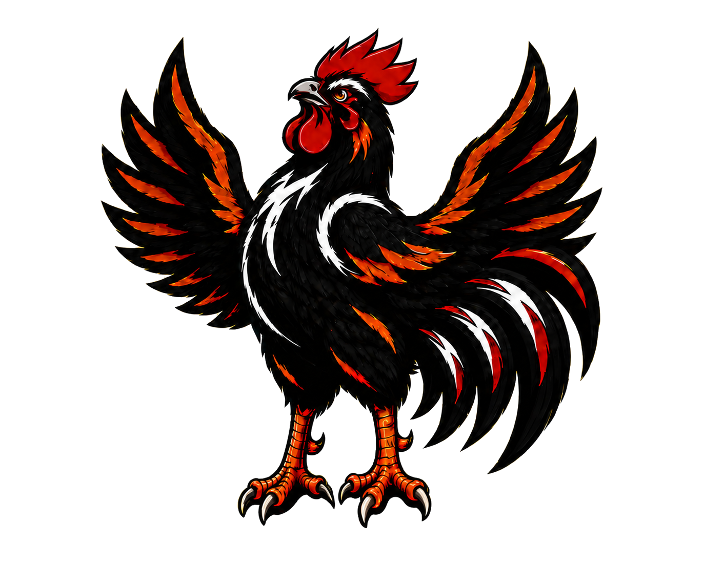

從熱氣對流循環開始
厚實雙層鋼桶並非擺設，而是將香氣與溫度緊緊鎖住的關鍵。當炭火在桶底燃起，熱對流沿著圓弧內壁精密循環，逼出多餘油脂、封存無窮香氣，外皮因而脆得立體有感。
我們不是在賣「差不多熟」的烤雞。我們研究的是：如何讓你咬下第一口時，在心裡吶喊「好險我有預訂！」

厚實雙層鋼桶並非擺設，而是將香氣與溫度緊緊鎖住的關鍵。當炭火在桶底燃起，熱對流沿著圓弧內壁精密循環，逼出多餘油脂、封存無窮香氣，外皮因而脆得立體有感。
火侯太急，表皮焦黑；時間不夠，肉質生澀；烤得過久，飽滿肉汁便會離家出走。每一爐都必須根據雞隻重量、當日濕度與溫度節點精密調控，絕不把美味交給運氣。
中藥草、辛香料的比例必須達到黃金平衡。我們拉長醃製時程，讓香氣透入最底層的每一寸肌肉纖維，即使吃到骨邊，依然濃郁有味，絕無冷場。
堅持預約制不是為了傲嬌，而是美味真的急不得。每日現烤的數量受限於醃製時間與鋼桶負載。現場隨到隨點只會打亂出爐節奏，最後委屈的是你的晚餐。
為了確保送到你手上的烤雞都是最完美的黃金時刻，我們不設電話熱線、不開放現場候位，全面透過線上系統精密控管每週限定取餐時段。